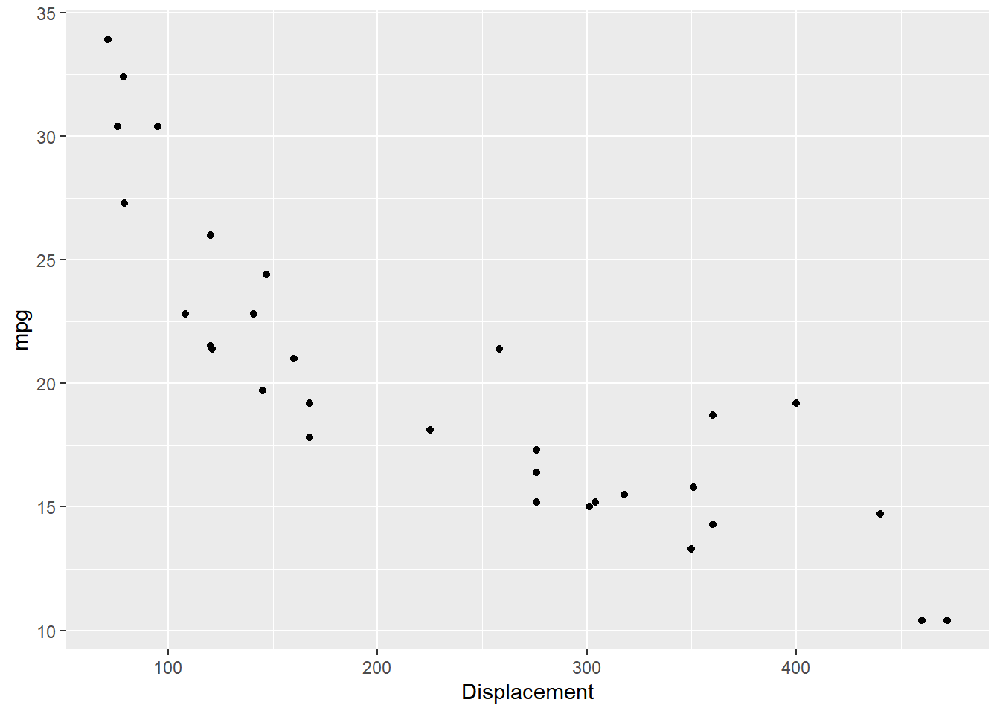
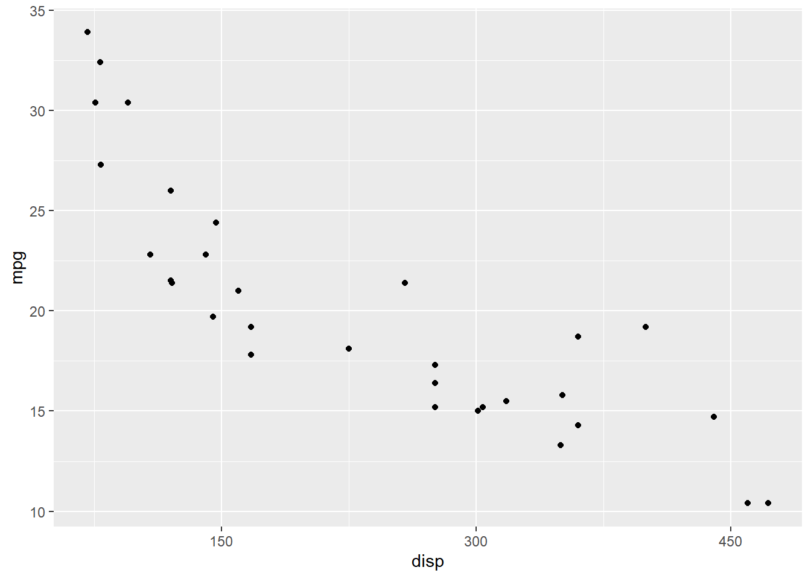
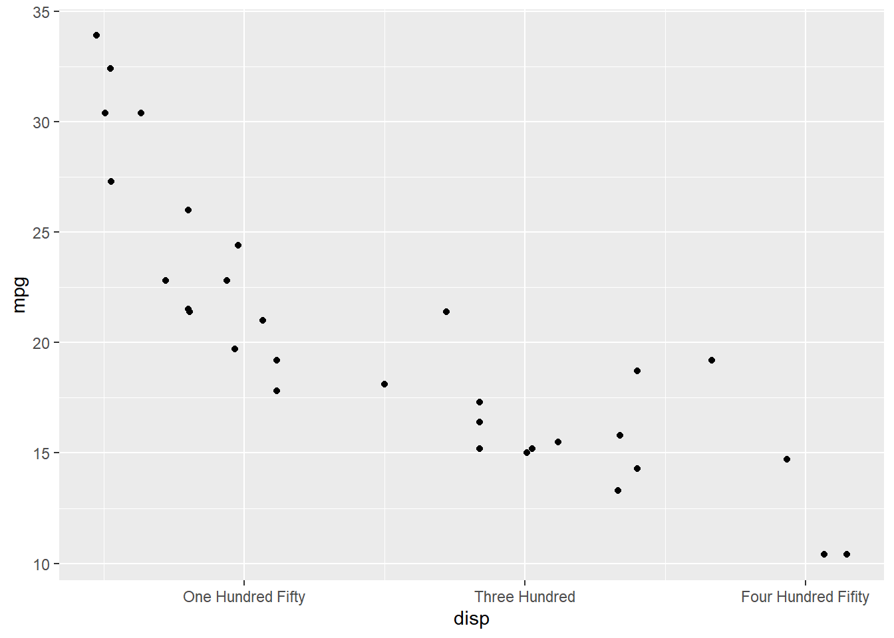
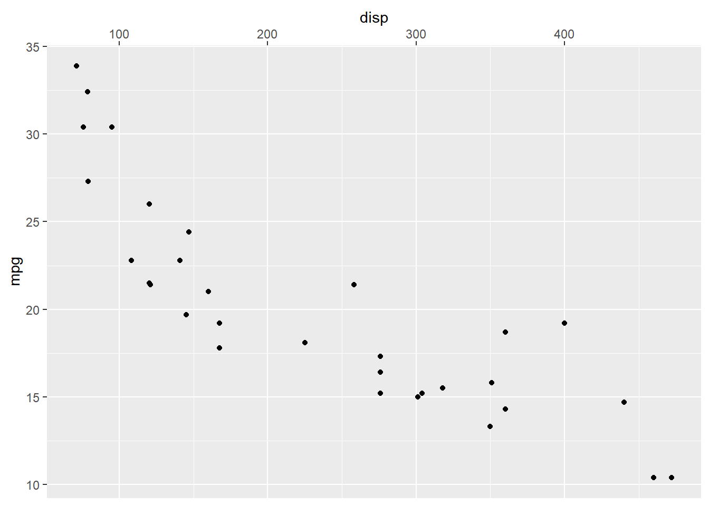
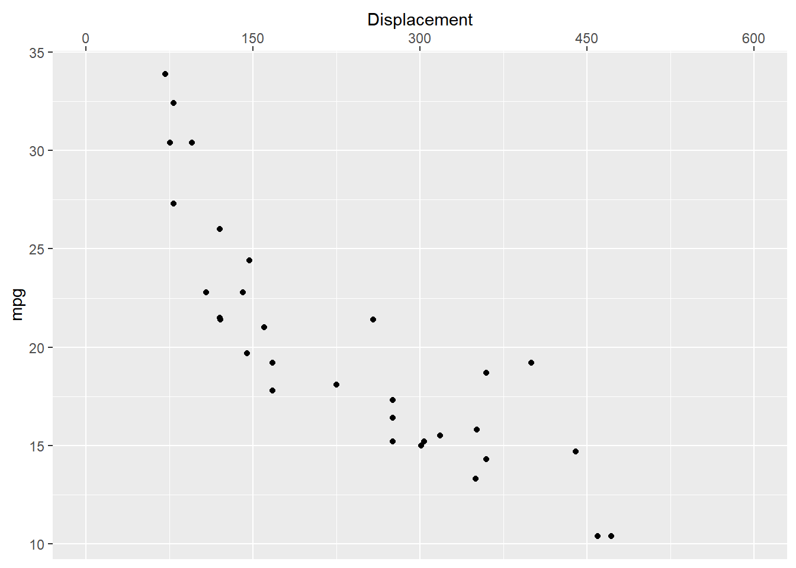
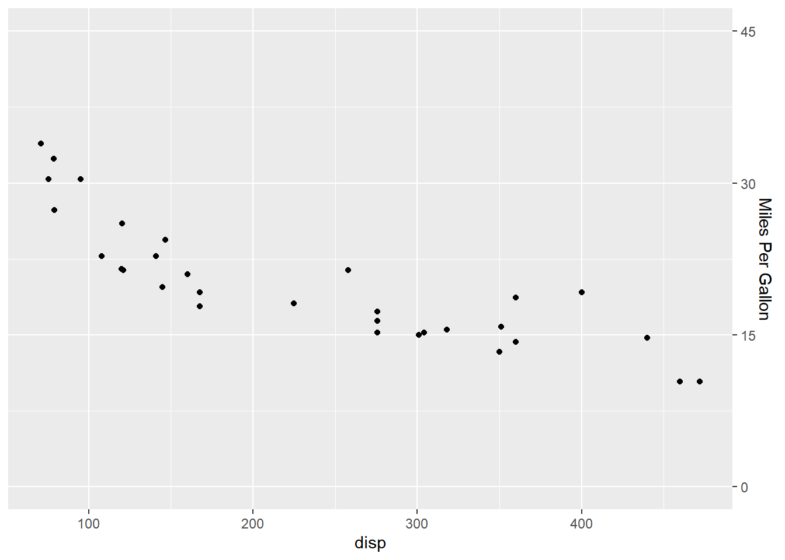
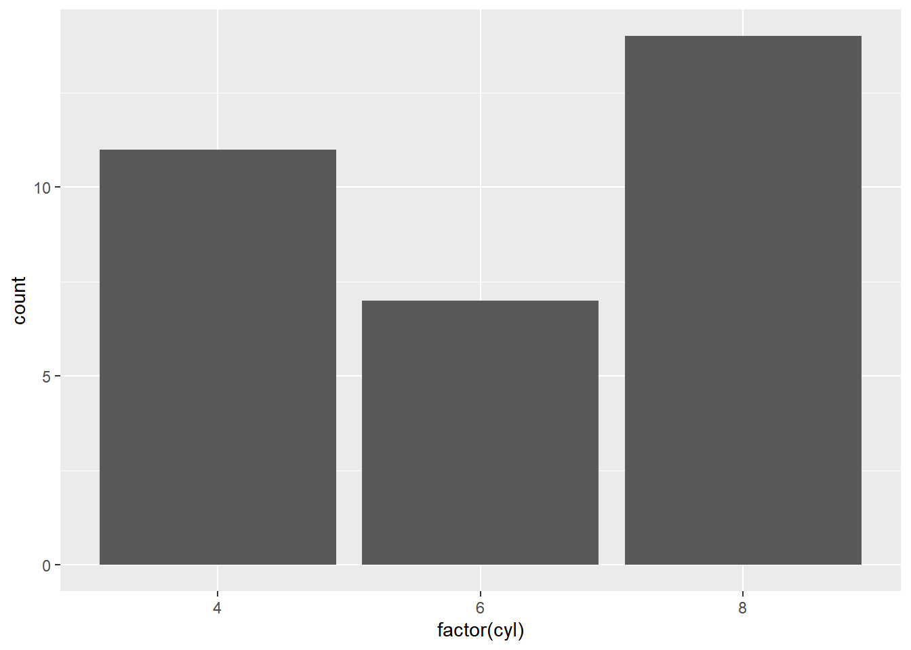

Chapter 11 Modify Axis
In this chapter, we will learn how to modify the X and Y axis using the following functions:
- Continuous Axis
scale_x_continuous()scale_y_continuous()
- Discrete Axis
scale_x_discrete()scale_y_discrete()
11.1 Continuous Axis
If the X and Y axis represent continuous data, we can use
scale_x_continuous() and scale_y_continuous() to modify the axis. They take
the following arguments:
- name
- limits
- breaks
- labels
- position
Let us continue with the scatter plot we have used in previous chapter.
ggplot(mtcars) +
geom_point(aes(disp, mpg))
The name argument is used to modify the X axis label. In the below example,
we change the X axis label to 'Displacement'. In previous chapters, we
have used xlab() to work with the X axis label.
ggplot(mtcars) +
geom_point(aes(disp, mpg)) +
scale_x_continuous(name = "Displacement")
To modify the range, use the limits argument. It takes a vector of length
2 i.e. 2 values, the lower and upper limit of the range. It is an alternative
for xlim().
ggplot(mtcars) +
geom_point(aes(disp, mpg)) +
scale_x_continuous(limits = c(0, 600))
In the above plot, the ticks on the X axis appear at 0, 200, 400 and
600. Let us say we want the ticks to appear more closer i.e. the difference
between the tick should be reduced by 50. The breaks argument will allow
us to specify where the ticks appear. It takes a numeric vector equal to the
length of the number of ticks.
ggplot(mtcars) +
geom_point(aes(disp, mpg)) +
scale_x_continuous(breaks = c(150, 300, 450))
We can change the tick labels using the labels argument. In the below
example, we use words instead of numbers. When adding labels, we need to
ensure that the length of the breaks and labels are same.
ggplot(mtcars) +
geom_point(aes(disp, mpg)) +
scale_x_continuous(breaks = c(150, 300, 450),
labels = c('One Hundred Fifty', 'Three Hundred', 'Four Hundred Fifity'))
The position of the axes can be changed using the position argument. In the
below example, we can move the axes to the top of the plot by supplying the
value 'top'.
ggplot(mtcars) +
geom_point(aes(disp, mpg)) +
scale_x_continuous(position = 'top')
11.1.1 Putting it all together..
ggplot(mtcars) + geom_point(aes(disp, mpg)) +
scale_x_continuous(name = "Displacement", limits = c(0, 600),
breaks = c(0, 150, 300, 450, 600), position = 'top',
labels = c('0', '150', '300', '450', '600'))
11.1.2 Y Axis - Continuous
ggplot(mtcars) + geom_point(aes(disp, mpg)) +
scale_y_continuous(name = "Miles Per Gallon", limits = c(0, 45),
breaks = c(0, 15, 30, 45), position = 'right',
labels = c('0', '15', '30', '45'))
11.2 Discrete Axis
If the X and Y axis represent discrete or categorical data, scale_x_discrete()
and scale_y_discrete() can be used to modify them. They take the following arguments:
- name
- labels
- breaks
- position
The above options serve the same purpose as in the case of continuous scales.
11.2.1 Axis Label
ggplot(mtcars) +
geom_bar(aes(factor(cyl))) +
scale_x_discrete(name = "Number of Cylinders")11.2.2 Axis Tick Labels
ggplot(mtcars) +
geom_bar(aes(factor(cyl))) +
scale_x_discrete(labels = c("4" = "Four", "6" = "Six", "8" = "Eight"))11.2.3 Axis Breaks
ggplot(mtcars) +
geom_bar(aes(factor(cyl))) +
scale_x_discrete(breaks = c("4", "6", "8"))
11.2.4 Axis Position
ggplot(mtcars) +
geom_bar(aes(factor(cyl))) +
scale_x_discrete(position = 'bottom')
11.3 Putting it all together…
ggplot(mtcars) + geom_bar(aes(factor(cyl))) +
scale_x_discrete(name = "Number of Cylinders",
labels = c("4" = "Four", "6" = "Six", "8" = "Eight"),
breaks = c("4", "6", "8"), position = "bottom")